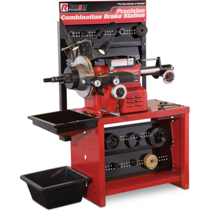

Pastillas de Frenos Delantero
Diferentes Modelos y Marcas Ital Brake.


Diferentes Modelos y Marcas Ital Brake.
Para Diferentes Modelos.

Maquina de Rectificado de Tambores y Discos
Diferencias de frenado